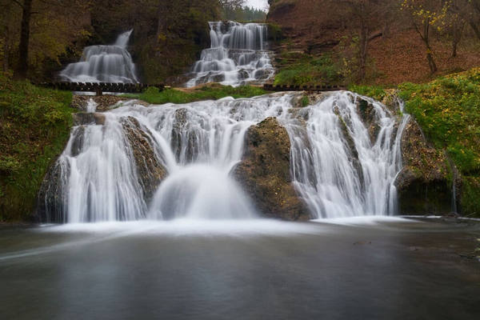
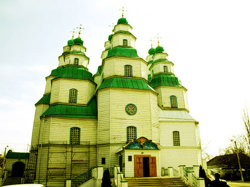
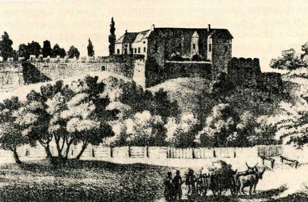
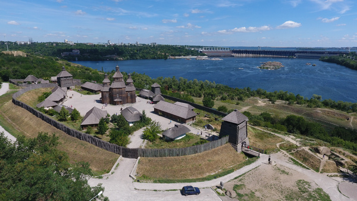
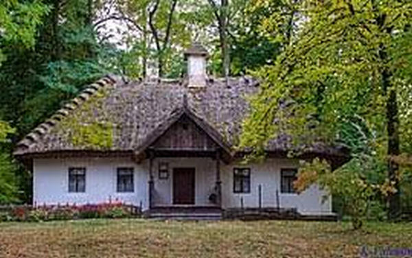

Джуринський водоспад
Джуринський водоспад – одне з неповторно красивих місць України. Це найбільший рівнинний водоспад Європи, який має шістнадцять метрів заввишки. Тече він біля села Нирків на Тернопільщині.
До речі, ця пам’ятка виникла завдяки втручанню людини. Як свідчать перекази, колись неподалік теперішнього водоспаду стояв неприступний Червоногрудський замок графині Любомирської. У цьому місці річка Джурин, що текла по своєрідному каньйону, робила закрут, омиваючи півострів, на якому височів палац.
Місцина ця була невимовно красивою: могутні дерева та чисті води, спів птахів і горді лісові мешканці – усе це було схоже на справжній райський куточок. Саме тому, мабуть, багато хто хотів загарбати цю територію. Після невдалої тривалої облоги турки вирішили повернути русло річки, відкриваючи собі підступ до не скореного ними замку. Ось так утворився Джуринський водоспад. Підтвердження цієї легенди – безводний, порослий де-не-де віковічними деревами глибокий рів навколо руїн фортеці.
Особливе враження ця місцина справляє на початку зими, коли на стежці до водоспаду крізь білосніжну ковдру проступає вогненно-червоний ґрунт, а прозора вода стікає по оксамитовому зеленому килиму з моху.
Шедевр козацької архітектури
Шедевром козацької архітектури, бо рівного за красою й урочистістю не було з-посеред храмів у всій Україні, уважають собор у нинішнім Новомосковську – запорізькому місті Самарі. Цей дивовижний дерев’яний витвір збудував народний майстер Яким Погребняк. Замовляючи йому будівлю, козаки просили спорудити її без цвяхів, бо вважали, що не можна вбивати цвяхи в храм Спасителя – Ісуса Христа, який ними був прибитий на хресті. Він останній, який побудували козаки перед скасуванням Запорізької Січі.
Основним знаряддям будівничих була всього-на-всього сокира, тому дотепер залишається загадкою, як їм вдалося досягти такої високої точності у виготовленні деталей. Храм прикрашає дев’ять куполів, пізніше перед ним була побудована дзвіниця. Виростаючи, собор усе більше вражав усіх грандіозною монументальністю, вишуканою стрімкістю та легкістю форм. Архітектор поєднав у ньому візантійське зодчество та українське бароко.
У цього храму є багато незбагненних таємниць. Наприклад, одна з них – геніальне моделювання замкненого простору, який охоплює людину в інтер’єрі собору. Світлі, прикрашені витонченими малюнками площини стін, які в стрімкому злеті перетинаються, створюють атмосферу величного спокою та божественного відсторонення від мирської марноти.
Привид Ужгородського замку
За легендою, у ХVІІ столітті власником Ужгородського замку був угорський лицар Другет. Він мав юну, напрочуд красиву доньку.
У ті сповнені небезпеки важкі часи на закарпатські міста нападали поляки. Якийсь польський магнат задумав будь-що-будь здобути замок. Аби довідатися, як це зробити, він вигадав хитромудрий план: перебрався мандрівним лицарем і приїхав у замок на розвідку. Вечорами оманливий мандрівник розповідав господарям про свої пригоди в далеких краях. І от, слухаючи ці оповідки та захоплюючись мужністю лицаря, донька
Другета закохалася в нього. А коли дізналася, хто її коханий, не змогла здолати любов і розповіла про те, скільки військової сили в замку та як його можна взяти. А загадка була така: існував таємний хід, секрет якого знали лише члени родини володаря.
Другет дізнався про підступність – і нечесного гостя було страчено. Не простив лицар і свою доньку: за зраду батько наказав живою замурувати її у фортечній стіні. Відтоді щоночі по замку ходить привид: це дівчина ніяк не знайде коханого. З першими півнями видіння зникає, щоб назавтра опівночі знову вийти на пошуки свого милого.
Острів Хортиця
Визначним місцем України є острів Хортиця – цитадель запорізького козацтва. Відвідувачів тут приваблює все: краса природи, і гучне бойове минуле, і цікаві експозиції місцевих історичних музеїв.
Хоча сліди козацького міста-фортеці не дійшли до наших днів, на його місці відтворений історико-культурний комплекс «Запорізька Січ», що дає уявлення про те, яким було козацьке поселення за часів його існування. Макет Січі розроблено за історичними документами та за участі вчених-істориків. Комплекс складається з дерев’яної фортеці з муром і дозорними вежами. Усередині фортеці розміщені курені, де козаки селилися за географічною ознакою: хто звідки родом. Крім того, на острові є великий Музей історії запорізького козацтва, експозиція якого охоплює історію Хортиці і в докозацькі часи.
Поселення на острові існували ще за часів енеоліту і бронзового віку, про це свідчать знайдені археологами предмети побуту: знаряддя праці, рештки посуду та прикраси. Згодом на Хортиці поселилися скіфи, які залишили тут по собі кургани-могильники з кам’яними ідолами
Охочі зануритися в козацьку атмосферу можуть відвідати кінний театр «Козацька залога» – фольклорно-етнографічний комплекс. Тут відтворюють звичаї козаків, і їхні військові маневри, і побут, і ремесла.
Канів
Канів – місто з особливими пам’ятками. Головна серед них – Тарасова, або Чернеча, гора, на якій похований усесвітньо відомий геній українського народу Тарас Григорович Шевченко. Тут облаштовано меморіальний комплекс – одне з найшановніших місць в Україні. Крім меморіалу, тут розташований історико-культурний заповідник, який першим у країні здобув статус національного. Над Дніпром височіє Шевченкова могила, яка схожа на величезний скіфський курган. До пам’ятника ведуть 342 сходинки.
Тарас Григорович відвідував Канів і бажав оселитися тут на схилі літ, проте планам не судилося справдитися. 1861 року поет помер і був похований у Петербурзі. Друзі Шевченка, пам’ятаючи про його мрію, наполягали на тому, щоб перевезти тіло на рідну Вкраїну. Перепоховання поета стало визначною всенародною подією.
Канів заснував князь Ярослав Мудрий. Від часів Київської Русі дійшло небагато архітектурних пам’яток, і кожна має величезну культурну цінність. До наших днів зберігся давньоруський Успенський собор, збудований київським князем Всеволодом. Неподалік Тарасової гори розташоване Кам’яне поле – парк скульптур, який щороку поповнюється новими витворами українських майстрів. У місті працює музей декоративно-прикладного мистецтва. Це місто з багатою історією.